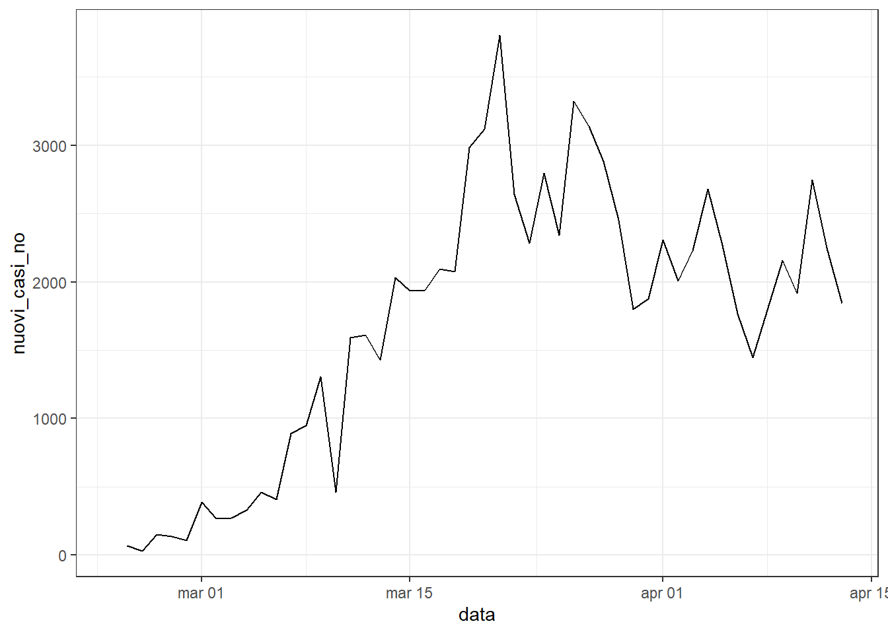
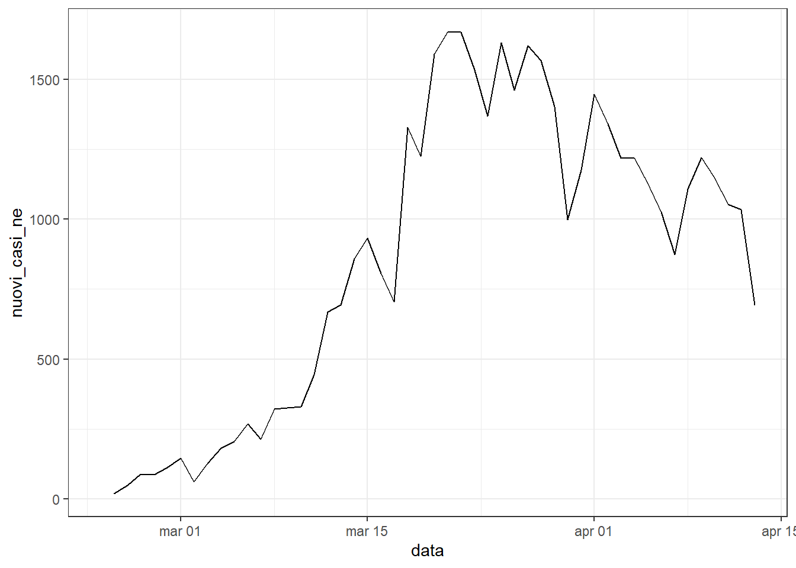
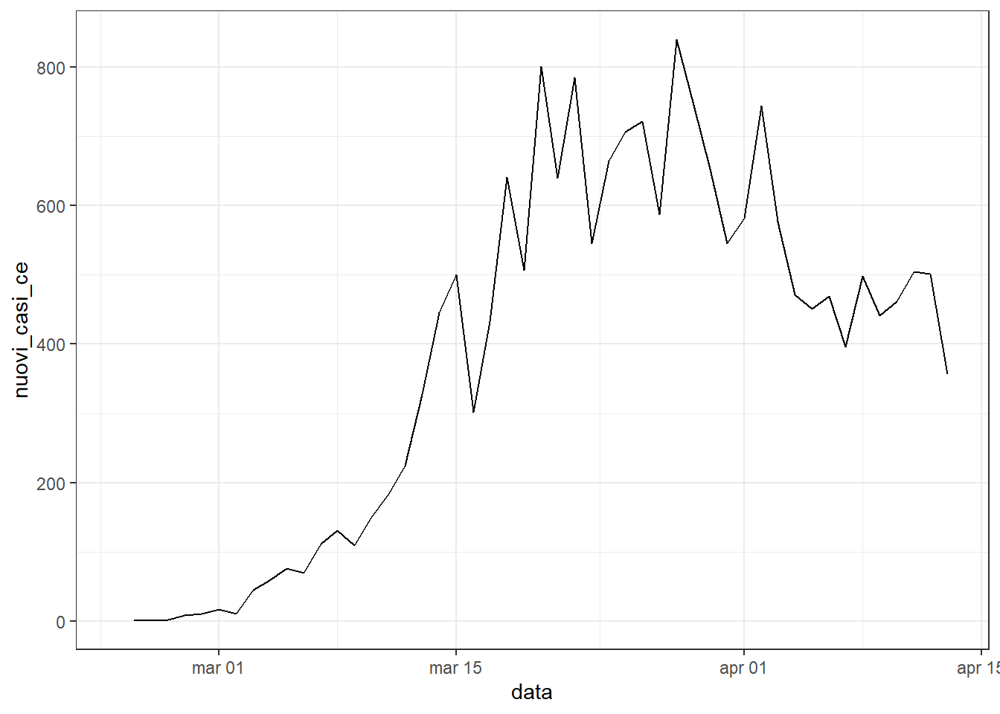
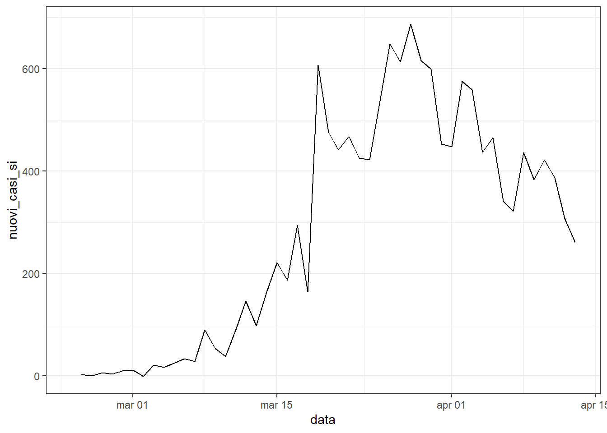
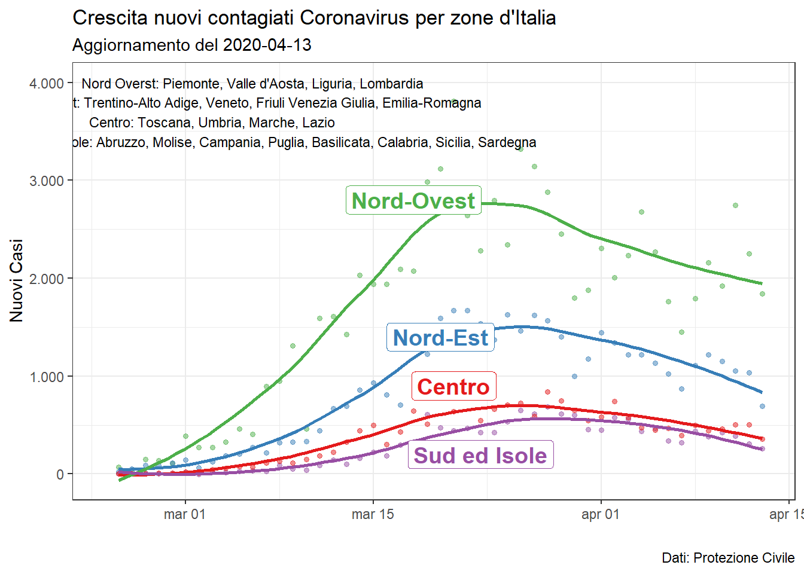

library(dplyr)
library(lubridate)
library(ggplot2)
library(magrittr)
theme_set(theme_bw())covid_italy <- read.csv("https://raw.githubusercontent.com/pcm-dpc/COVID-19/master/dati-regioni/dpc-covid19-ita-regioni.csv")covid_italy %>%
glimpse()## Observations: 819
## Variables: 19
## $ data <fct> 2020-02-24T18:00:00, 2020-02-24T18:00:00...
## $ stato <fct> ITA, ITA, ITA, ITA, ITA, ITA, ITA, ITA, ...
## $ codice_regione <int> 13, 17, 4, 18, 15, 8, 6, 12, 7, 3, 11, 1...
## $ denominazione_regione <fct> Abruzzo, Basilicata, P.A. Bolzano, Calab...
## $ lat <dbl> 42.35122, 40.63947, 46.49933, 38.90598, ...
## $ long <dbl> 13.398438, 15.805148, 11.356624, 16.5944...
## $ ricoverati_con_sintomi <int> 0, 0, 0, 0, 0, 10, 0, 1, 0, 76, 0, 0, 2,...
## $ terapia_intensiva <int> 0, 0, 0, 0, 0, 2, 0, 1, 0, 19, 0, 0, 0, ...
## $ totale_ospedalizzati <int> 0, 0, 0, 0, 0, 12, 0, 2, 0, 95, 0, 0, 2,...
## $ isolamento_domiciliare <int> 0, 0, 0, 0, 0, 6, 0, 0, 0, 71, 0, 0, 1, ...
## $ totale_positivi <int> 0, 0, 0, 0, 0, 18, 0, 2, 0, 166, 0, 0, 3...
## $ variazione_totale_positivi <int> 0, 0, 0, 0, 0, 0, 0, 0, 0, 0, 0, 0, 0, 0...
## $ nuovi_positivi <int> 0, 0, 0, 0, 0, 18, 0, 2, 0, 166, 0, 0, 3...
## $ dimessi_guariti <int> 0, 0, 0, 0, 0, 0, 0, 1, 0, 0, 0, 0, 0, 0...
## $ deceduti <int> 0, 0, 0, 0, 0, 0, 0, 0, 0, 6, 0, 0, 0, 0...
## $ totale_casi <int> 0, 0, 0, 0, 0, 18, 0, 3, 0, 172, 0, 0, 3...
## $ tamponi <int> 5, 0, 1, 1, 10, 148, 58, 124, 1, 1463, 1...
## $ note_it <fct> , , , , , , , , , , , , , , , , , , , , ...
## $ note_en <fct> , , , , , , , , , , , , , , , , , , , , ...covid_italy %<>%
mutate(data = date(data)) %>%
mutate(regione = as.character(denominazione_regione)) %>%
select(-denominazione_regione,
-stato,
-codice_regione,
-lat,
-long,
-note_it,
-note_en) %>%
mutate(regione = ifelse(.$regione == "Trento","Trentino-Alto Adige",.$regione))%>%
mutate( regione = ifelse(.$regione == "Bolzano","Trentino-Alto Adige",.$regione)) %>%
mutate(regione = ifelse(.$regione == "P.A. Trento","Trentino-Alto Adige",.$regione))%>%
mutate( regione = ifelse(.$regione == "P.A. Bolzano","Trentino-Alto Adige",.$regione)) %>%
group_by(regione,data) %>%
summarize_all(~sum(.)) %>%
ungroup(regione) %>%
arrange(desc(data),desc(totale_casi)) covid_italycovid_nord_ovest <-
covid_italy %>%
filter(regione %in%
c("Piemonte", "Valle d'Aosta", "Liguria", "Lombardia")) %>%
select(-regione) %>%
group_by(data) %>%
summarise(totale_nord_ovest = sum(totale_casi)) %>%
mutate(nuovi_casi_no = totale_nord_ovest - lag(totale_nord_ovest))
covid_nord_ovest %>%
ggplot(aes(data,nuovi_casi_no)) + geom_line()
covid_nord_est <-
covid_italy %>%
filter(regione %in%
c("Trentino-Alto Adige", "Veneto", "Friuli Venezia Giulia", "Emilia-Romagna")) %>%
select(-regione) %>%
group_by(data) %>%
summarise(totale_nord_est = sum(totale_casi)) %>%
mutate(nuovi_casi_ne = totale_nord_est - lag(totale_nord_est))
covid_nord_est %>%
ggplot(aes(data,nuovi_casi_ne)) + geom_line()
covid_centro <-
covid_italy %>%
filter(regione %in%
c("Toscana", "Umbria", "Marche", "Lazio")) %>%
select(-regione) %>%
group_by(data) %>%
summarise(totale_centro = sum(totale_casi)) %>%
mutate(nuovi_casi_ce = totale_centro - lag(totale_centro))
covid_centro %>%
ggplot(aes(data,nuovi_casi_ce)) + geom_line()
covid_sud_isole <-
covid_italy %>%
filter(regione %in%
c("Abruzzo", "Molise", "Campania", "Puglia",
"Basilicata", "Calabria","Sicilia","Sardegna")) %>%
select(-regione) %>%
group_by(data) %>%
summarise(totale_sud_isole = sum(totale_casi)) %>%
mutate(nuovi_casi_si = totale_sud_isole - lag(totale_sud_isole))
covid_sud_isole %>%
ggplot(aes(data,nuovi_casi_si)) + geom_line()
covid_byregion <-
covid_nord_ovest %>%
left_join(covid_nord_est) %>%
left_join(covid_centro) %>%
left_join(covid_sud_isole) %>%
select(data,nuovi_casi_no,nuovi_casi_ne,nuovi_casi_si,nuovi_casi_ce)library(tidyr)
library(scales)
library(ggpubr)
library("RColorBrewer")
text_no <- paste("Nord Overst: Piemonte, Valle d'Aosta, Liguria, Lombardia")
text_ne <- paste("Nord Est: Trentino-Alto Adige, Veneto, Friuli Venezia Giulia, Emilia-Romagna")
text_centro <- paste("Centro: Toscana, Umbria, Marche, Lazio")
text_si <- paste("Sud e Isole: Abruzzo, Molise, Campania, Puglia, Basilicata, Calabria, Sicilia, Sardegna")
covid_byregion_gather <-
covid_byregion %>%
gather(gr,nuovi_casi,-data) %>%
mutate(gr = as.factor(gr))
#Create a custom color scale
library(RColorBrewer)
myColors <- brewer.pal(4,"Set1")
names(myColors) <- levels(covid_byregion_gather$gr)
colScale <- scale_colour_manual(name = "grp",values = myColors)
# "#E41A1C" centro
# "#377EB8" nord-est
# "#4DAF4A" nord-ovest
# "#984EA3" sud isole
covid_byregion_gather %>%
ggplot(aes(x=data,y=nuovi_casi,colour=gr)) +
#-- color
colScale +
#--
geom_point(aes(colour=gr),size=1.2, alpha=0.5) +
geom_smooth(se=F) +
scale_y_continuous(label = comma_format(big.mark = ".", decimal.mark = ",") ) +
#-- Annotate Nord ovest
annotate("text", x = ymd("2020-03-6"), y =4000, label = text_no,size=3) +
geom_label( aes( x=ymd("2020-03-18"), y=2800, label="Nord-Ovest"),
color="#4DAF4A",
size=5 , fontface="bold" )+
#-- Annotate Nord est
annotate("text", x = ymd("2020-03-6"), y =3800, label = text_ne,size=3) +
geom_label( aes( x=ymd("2020-03-20"), y=1400, label="Nord-Est"),
color="#377EB8",
size=5 , fontface="bold" )+
#-- Annotate Centro
annotate("text", x = ymd("2020-03-3"), y =3600, label = text_centro,size=3) +
geom_label( aes( x=ymd("2020-03-21"), y=900, label="Centro"),
color="#E41A1C",
size=5 , fontface="bold" )+
#-- Annotate Sud Isole
annotate("text", x = ymd("2020-03-8"), y =3400, label = text_si,size=3) +
geom_label( aes( x=ymd("2020-03-23"), y=200, label="Sud ed Isole"),
color="#984EA3",
size=5 , fontface="bold" )+
#-- #iorestoacasa
labs(title = "Crescita nuovi contagiati Coronavirus per zone d'Italia",
subtitle = paste0("Aggiornamento del ", Sys.Date()),
caption = "Dati: Protezione Civile",
x = "",
y = "Nuovi Casi") +
theme(legend.position = "none") 